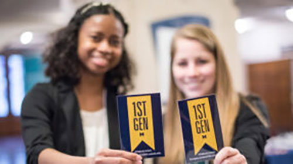

Who we are
The First-Generation Student Program is grounded in a history of student activism. First-Generation College Students @UM, a student organization, was founded in 2007 with the mission to increase accessibility to resources for first-generation students and to build community among the population. The students advocated for greater campus support for themselves and other peer first-generation students. In 2017, University of Michigan hired the inaugural first First-Generation Program Manager, established the First-Generation Gateway Office, and launched multiple initiatives to increase first-generation student success. As a result, student engagement has increased significantly since 2017 and University of Michigan’s first-generation efforts have received national recognition.
Our Stories
U-M faculty, students and staff who are first-generation students and graduates proudly share their stories. We’d like to hear from you too. What has your experience been like as a first-gen at U-M? We are collecting stories from first-generation college students who have a connection to the University of Michigan. If you are an alumnus/alumna, faculty, staff or student from U-M, we would love to share your story.
Christina Zerka

Joseph Ballard II

Cielo Jimenez

Events
- 2024 First-Generation Winter Community Dinner
- First-Gen Day of Visibility
- First-Gen Mentor Meet